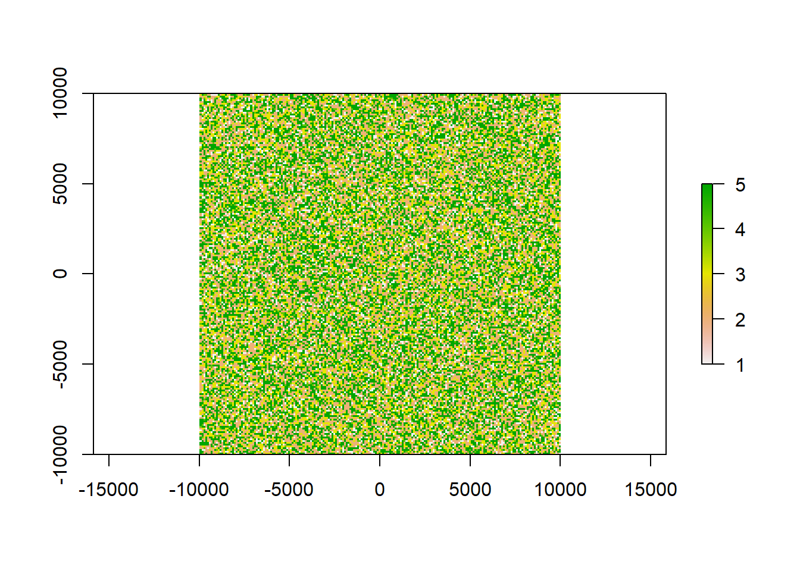

Chapter 12 Calculating class area from raster
12.1 Simple area and area fraction calculations on a classified raster
For this tutorial you will need to load the following packages:
library(raster)
library(sf)
library(tidyverse)You will often come across the task of extracting the area each of your raster classes occupies within your entire raster area. There is a simple way of doing this using raster and dplyr. The output will be a comprehensive table. First let’s create some dummy data to work with:
12.1.1 Creating dummy data
x <- raster(ncol=100, nrow=100, xmn=-10000, xmx=10000, ymn=-10000, ymx=10000)
res(x)<-100 # we are using a resolution of 100 x 100 so that each pixel is 1ha in size
#populate the raster with values
values(x)<-base::sample(5, ncell(x), replace = T, prob = c(10,30,20,5,35))
plot(x)
Our raster now contains 5 classes that could e.g. be land-use types such as forest, infrastructure or pasture. We additionally gave each class a probability of occurrence so that we can double check of our calculated areas are correct. In total, our raster x has 4^{4} cells.
12.1.2 Preparing the raster for area calculation
To get area metrics, we need to transform the raster into a data frame:
rast_df<-x%>%as.data.frame(xy = T, na.rm = T)To count each pixel, we can assign an extra column to this dataframe with an ID 1 to be able to tally all cells. Additionally, we are extracting the resolution of our raster as a variable to our environment to later calculate the area.
rast_df$ID<-1
reso<-res(x)[1]
head(rast_df)## x y layer ID
## 1 -9950 9950 3 1
## 2 -9850 9950 5 1
## 3 -9750 9950 4 1
## 4 -9650 9950 4 1
## 5 -9550 9950 2 1
## 6 -9450 9950 2 1The layer column contains the class each pixel was assigned to. This will be universal for any raster you put in. ID is the same for each row, this is only needed in the next step.
12.1.3 Compiling a comprehensive table
area<-rast_df%>%group_by(layer)%>%
summarise(pixelsum = sum(ID), area_ha = (pixelsum*reso^2)/10000)%>%
mutate(sumA = sum(pixelsum), per = 100*pixelsum/sumA)%>%
rename(class = layer)## `summarise()` ungrouping output (override with `.groups` argument)area## # A tibble: 5 x 5
## class pixelsum area_ha sumA per
## <int> <dbl> <dbl> <dbl> <dbl>
## 1 1 4020 4020 40000 10.0
## 2 2 11978 11978 40000 29.9
## 3 3 7951 7951 40000 19.9
## 4 4 1930 1930 40000 4.82
## 5 5 14121 14121 40000 35.3And there we go. Each class has it’s pixelsum calculated, then using the sum we can calculate the area in ha (or else, here you can alternate the code). In this case the pixel sum matches our area_ha because one pixel is already of size 1 ha. We can change the code to e.g. calculate area_km2.
area_km2<-rast_df%>%group_by(layer)%>%
summarise(pixelsum = sum(ID), area_km2 = pixelsum/100)%>%
mutate(sumA = sum(pixelsum), per = 100*pixelsum/sumA)%>%
rename(class = layer)## `summarise()` ungrouping output (override with `.groups` argument)area_km2## # A tibble: 5 x 5
## class pixelsum area_km2 sumA per
## <int> <dbl> <dbl> <dbl> <dbl>
## 1 1 4020 40.2 40000 10.0
## 2 2 11978 120. 40000 29.9
## 3 3 7951 79.5 40000 19.9
## 4 4 1930 19.3 40000 4.82
## 5 5 14121 141. 40000 35.3Next we calculate the sum of all pixels (sumA) using mutate() to get the total raster area. This should in this case be the same as ncell(x) (40000). To derive the percentage of the entire each class occupies, we just need to divide the pixelsum of each class by the total sum and multiply by 100. This should match our probabilities we assigned for each class when filling the raster with values:
area_km2$per == summary(as.factor(values(x)))/400## 1 2 3 4 5
## TRUE TRUE TRUE TRUE TRUEEnjoy trying it out on your own raster with some actual class ares!